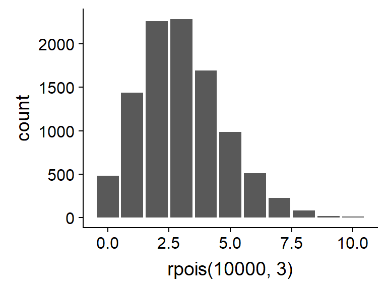
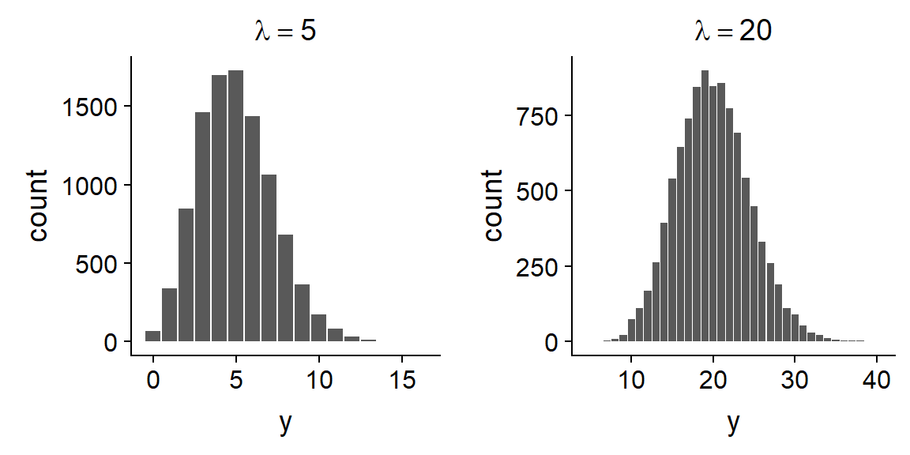
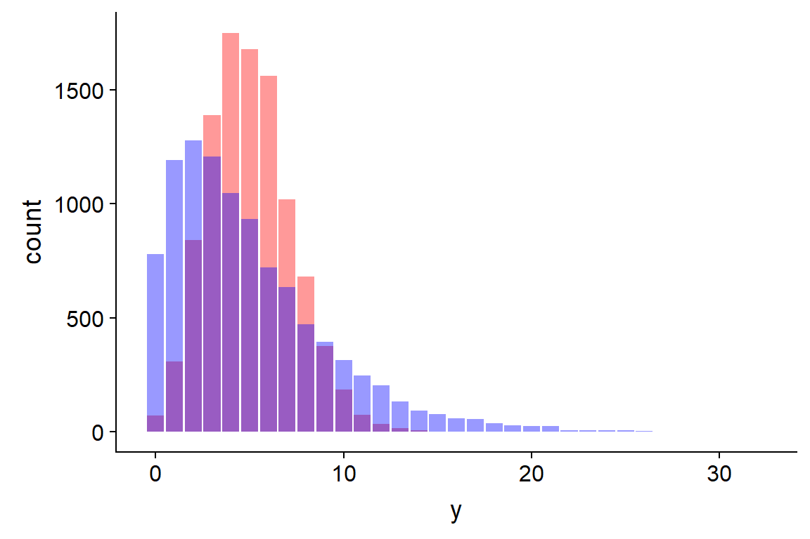
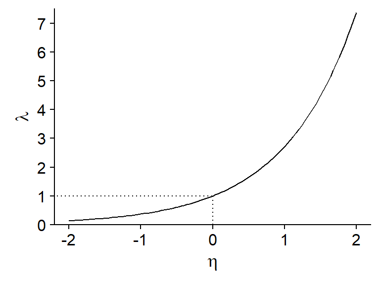

Savoir quand et comment utiliser un modèle linéaire généralisé avec distribution de Poisson.
Détecter la surdispersion dans un modèle linéaire généralisé.
Adapter l’estimation de paramètres et la sélection de modèles au cas de modèles surdispersés.
Nombre d’observations d’un certain événement dans une unité d’échantillonnage définie.
Quelques exemples en écologie:
le nombre de semis d’une espèce dans plusieurs quadrats;
le nombre d’espèces (richesse spécifique) observé sur différents sites;
le nombre d’individus d’une espèce d’oiseau entendus dans un certain laps de temps lors de différentes visites à un site.
Ce sont des nombres discrets \(\ge\) 0.
Leur distribution est généralement asymétrique, surtout si le nombre moyen est petit.
La variance du nombre d’observations augmente avec la moyenne.
Dans ce cas, la variable \(y\) suit une distribution de Poisson, avec un paramètre \(\lambda\) = taux moyen d’observations par intervalle.
\[ P(y | \lambda) = \frac{\lambda^y}{y!} e^{-\lambda} \]
Dans R, la fonction rpois génère des valeur suivant une distribution de Poisson et dpois donne la probabilité d’une valeur de \(y\) donnée.
dpois(1, lambda = 3)## [1] 0.1493612
Binomiale: réponse positive ou négative pour chaque individu (ou unité d’échantillonnage).
Poisson: nombre d’observations par unité d’échantillonnage.
Si une réponse binomiale est rare (\(p\) faible) et la population \(n\) est grande, alors le nombre de cas dans la population suit une distribution de Poisson avec \(\lambda = np\).
Lorsque \(\lambda\) est assez grand, la distribution de Poisson devient plus symétrique et tend vers une distribution normale.

Toutefois, la régression linéaire et la régression de Poisson ont différentes suppositions sur la variance.
Régression linéaire: \(\mu\) dépend des prédicteurs, \(\sigma^2\) est constante.
Régression de Poisson: la moyenne et la variance sont égales à \(\lambda\), qui dépend des prédicteurs.
La distribution de Poisson suppose l’indépendance des observations individuelles. Toutefois, cette condition est rarement respectée parfaitement. Par exemple:
Lorsqu’on observe plus de valeurs extrêmes que prévu par le modèle de Poisson, il y a surdispersion des données.

Modèle linéaire généralisé où la réponse \(y\) suit une distribution de Poisson:
\[ y \sim Pois(\lambda) \]
Puisque \(\lambda\) doit être positif, nous utiliserons la fonction de logarithme comme lien:
\[ \log{\lambda} = \eta = \beta_0 + \sum_{i = 1}^m \beta_i x_i \]
\[ \log{\lambda} = \eta = \beta_0 + \sum_{i = 1}^m \beta_i x_i \]

Relation exponentielle entre réponse moyenne et les prédicteurs:
\[ \hat{y} = \lambda = e^{\beta_0 + \sum_{i = 1}^m \beta_i x_i} \]
Addition de puissances = effets multiplicatifs des prédicteurs
\[ \hat{y} = e^{\beta_0} e^{\beta_1 x_1} e^{\beta_2 x_2} \ldots \]
| Modèle | Distribution | Lien par défaut | Inverse du lien |
|---|---|---|---|
| Régression linéaire | Normale: \(y \sim N(\mu, \sigma)\) | Identité: \(\mu = \eta\) | \(\mu = \eta\) |
| Régression logistique | Binomiale: \(y \sim B(n, p)\) | Logit: \(\log(p/(1-p)) = \eta\) | \(p = 1/(1+e^{-\eta})\) |
| Régression de Poisson | Poisson: \(y \sim Pois(\lambda)\) | Log: \(\log(\lambda) = \eta\) | \(\lambda = e^{\eta}\) |
Nombre d’espèces de plantes dans différents quadrats en fonction de la biomasse totale du quadrat et du pH codé selon trois niveaux.
sp <- read.csv("../donnees/species.csv")
# Niveaux de pH dans le bon ordre
sp$pH <- factor(sp$pH, levels = c("low", "mid", "high"))
str(sp)## 'data.frame': 90 obs. of 3 variables:
## $ pH : Factor w/ 3 levels "low","mid","high": 3 3 3 3 3 3 3 3 3 3 ...
## $ Biomass: num 0.469 1.731 2.09 3.926 4.367 ...
## $ Species: int 30 39 44 35 25 29 23 18 19 12 ...Contrairement à la régression linéaire, la variance n’est pas estimée séparément dans la régression de Poisson.
Modélisation des données surdispersées: variance égale à \(\phi \lambda\) où \(\phi\) est le paramètre de dispersion.
Sous-dispersion (\(\phi < 1\)) plus rare, indique que les observations sont réparties de façon plus régulière que prévue.
\[ \chi^2 = \sum_{k=1}^n \frac{(y_k - \hat{y_k})^2}{\hat{y_k}} \]
\[ \hat{c} = \frac{\chi^2}{df_{res}} \]
Nombre d’espèces de tortues et d’espèces endémiques pour différentes îles de l’archipel des Galapagos.
glp <- read.csv("../donnees/galapagos.csv")
str(glp)## 'data.frame': 30 obs. of 8 variables:
## $ Name : Factor w/ 30 levels "Baltra","Bartolome",..: 1 2 3 4 5 6 7 8 9 10 ...
## $ Species : int 58 31 3 25 2 18 24 10 8 2 ...
## $ Endemics : int 23 21 3 9 1 11 0 7 4 2 ...
## $ Area : num 25.09 1.24 0.21 0.1 0.05 ...
## $ Elevation: int 346 109 114 46 77 119 93 168 71 112 ...
## $ Nearest : num 0.6 0.6 2.8 1.9 1.9 8 6 34.1 0.4 2.6 ...
## $ Scruz : num 0.6 26.3 58.7 47.4 1.9 ...
## $ Adjacent : num 1.84 572.33 0.78 0.18 903.82 ...Pour une régression logistique binomiale (\(y\) succès sur \(n\) essais), les réponses peuvent aussi être surdispersées ou sous-dispersées.
On estime le paramètre de dispersion de la même façon (avec le \(\chi^2\)). Il existe aussi une famille quasibinomial pour la fonction glm.
La variance d’une réponse binaire est toujours \(p(1-p)\); pas de surdispersion ou sous-dispersion possible.
Dans le cas de surdispersion, il faut corriger l’AIC pour obtenir le QAIC.
\[ QAIC = -\frac{2 \log L}{\hat{c}} + 2 K \]
On peut modifier l’AICc de la même façon pour obtenir le QAICc.
\[ QAICc = -\frac{2 \log L}{\hat{c}} + 2 K \left( \frac{n}{n-K-1} \right) \]
Si on compare plusieurs modèles avec le QAIC ou QAICc, il faut utiliser une seule valeur du \(\hat{c}\), celle calculée à partir du modèle le plus complexe.
Le package AICcmodavg contient une fonction c_hat pour calculer le paramètre de dispersion.
Les autres fonctions du package comme aictab acceptent l’argument c.hat et calculeront le QIAC(c) dans ce cas.
Quatre modèles pour prédire le nombre d’espèces endémiques sur les îles Galapagos.
mod_area <- glm(Endemics ~ log(Area), data = glp, family = poisson)
mod_area_near <- glm(Endemics ~ log(Area) + log(Nearest), data = glp, family = poisson)
mod_area_adj <- glm(Endemics ~ log(Area) + log(Adjacent), data = glp, family = poisson)
mod_comp <- glm(Endemics ~ log(Area) + log(Nearest) + log(Adjacent), data = glp, family = poisson)library(AICcmodavg)
disp <- c_hat(mod_comp)
disp## 'c-hat' 3.56 (method: pearson estimator)Voici le tableau du QAICc pour ces modèles:
mod_list <- list(mod_area = mod_area, mod_area_near = mod_area_near,
mod_area_adj = mod_area_adj, mod_comp = mod_comp)
aictab(mod_list, c.hat = disp)##
## Model selection based on QAICc:
## (c-hat estimate = 3.562208)
##
## K QAICc Delta_QAICc QAICcWt Cum.Wt Quasi.LL
## mod_area_adj 4 76.19 0.00 0.42 0.42 -33.30
## mod_comp 5 76.68 0.49 0.33 0.75 -32.09
## mod_area 3 78.49 2.29 0.13 0.89 -35.78
## mod_area_near 4 78.82 2.63 0.11 1.00 -34.61Comparons le QAICc et l’AICc
##
## Model selection based on QAICc:
## (c-hat estimate = 3.562208)
##
## K QAICc Delta_QAICc QAICcWt Cum.Wt Quasi.LL
## mod_area_adj 4 76.19 0.00 0.42 0.42 -33.30
## mod_comp 5 76.68 0.49 0.33 0.75 -32.09
## mod_area 3 78.49 2.29 0.13 0.89 -35.78
## mod_area_near 4 78.82 2.63 0.11 1.00 -34.61##
## Model selection based on AICc:
##
## K AICc Delta_AICc AICcWt Cum.Wt LL
## mod_comp 4 238.23 0.00 0.95 0.95 -114.31
## mod_area_adj 3 244.14 5.91 0.05 1.00 -118.61
## mod_area_near 3 253.50 15.27 0.00 1.00 -123.29
## mod_area 2 259.37 21.14 0.00 1.00 -127.46La distribution de Poisson représente le nombre d’observations indépendantes d’un événement dans une unité d’échantillonnage.
Le modèle de régression de Poisson est basé sur une distribution de Poisson de la réponse autour de sa valeur moyenne; cette valeur est reliée au prédicteur linéaire par la fonction de logarithme.
En raison du lien logarithmique, les effets additifs sur l’échelle du prédicteur linéaire deviennent des effets multiplicatifs sur l’échelle de la réponse.
Les distributions binomiale et de Poisson supposent une certaine relation entre la valeur moyenne de la réponse et sa variance. La surdispersion correspond à une variance plus grande que prévue par la distribution.
Si le paramètre de dispersion n’est pas trop élevé (\(\hat{c} < 4\)), on peut tout de même utiliser le modèle de Poisson (ou binomial) et multiplier les erreurs-types des coefficients par \(\sqrt{\hat{c}}\).
Pour la sélection de modèles, l’AIC(c) doit être remplacé par le QAIC(c) pour tenir compte de la surdispersion.
Exploration des données (distribution des variables individuelles et corrélations)
Choix d’un type de modèle et ajustement du modèle (lm, glm, etc.)
Vérification des suppositions du modèle (ex.: graphiques de diagnostic, paramètre de dispersion)
Interprétation des valeurs estimées des coefficients
Visualisation des prédictions du modèle
Si plusieurs modèles candidats: comparaison, sélection d’un meilleur modèle et/ou prédictions multimodèles